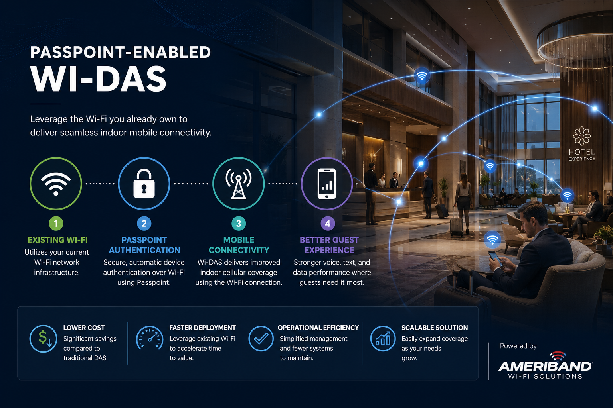

Connectivity Solutions
- Business Internet
- Fiber and Broadband
- WAN / SD-WAN
- Carrier Coordination
- Commercial Alignment
Technology Solutions. Trusted Guidance. Accountable Execution.
Dascoda helps hospitality organizations and multi-site businesses navigate connectivity, mobility, Passpoint, and technology partner ecosystems while maintaining alignment, accountability, and execution focus.
Strategic Partner Ecosystem
Dascoda helps organizations navigate provider relationships, mobility programs, technology initiatives, and deployment partners while maintaining alignment between ownership, operations, technology teams, and service providers throughout evaluation, deployment, and operational readiness.

Featured Partnership: Ameriband
Dascoda serves as Ameriband's exclusive hospitality partner, helping hotel owners, operators, and management teams evaluate, pilot, and deploy Passpoint-enabled Wi-Fi through Ameriband that leverages existing wireless infrastructure to improve indoor mobile connectivity.
Ameriband provides a Passpoint-enabled Wi-Fi solution that leverages existing wireless infrastructure to deliver seamless indoor mobile connectivity. Dascoda helps clients assess fit, align stakeholders, coordinate deployment activities, and maintain accountability from evaluation through operational readiness.
How Dascoda Helps
Dascoda helps organizations identify the right partners, align responsibilities, coordinate deployment activities, and maintain accountability through implementation and operational readiness.
Dascoda helps organizations identify the right partners, align stakeholders, coordinate execution, and maintain accountability through operational readiness.